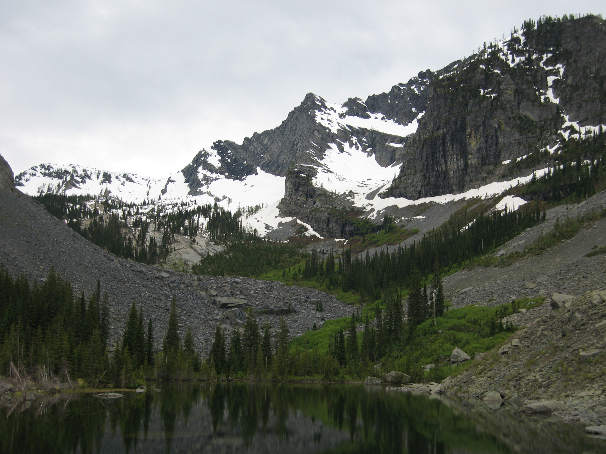

Conservation 101
Accomplishments

Shields Park / Minnehaha
Salmo-Priest Wilderness

Donations
Save Mt Spokane
Rock Creek Alliance / Save Our Cabinets
Friends Of Scotchman Peaks Wilderness
Trail Work
- Over 100 projects since 1991
- Well over 500 volunteer-hours to date in 2017
Stevens Lakes
Lone Lake

Snow Peak
Wenaha River
Dishman Hills
Glenrose
2016 Summary

- John Wayne Pioneer Trail - WA State Parks
- Support Parks Funding - WA State Parks
- Spokane County Conservation Futures
- Colville National Forest Master Plan comments & Thirteenmile Hike
- Mt Rainier Wilderness Plan Revision
- Mica Peak Conservation Trail Plan comments & hike
Finding Your Representatives
http://app.leg.wa.gov/districtfinder
https://openstates.org/find_your_legislator
Comment Protips
Jeff Lambert